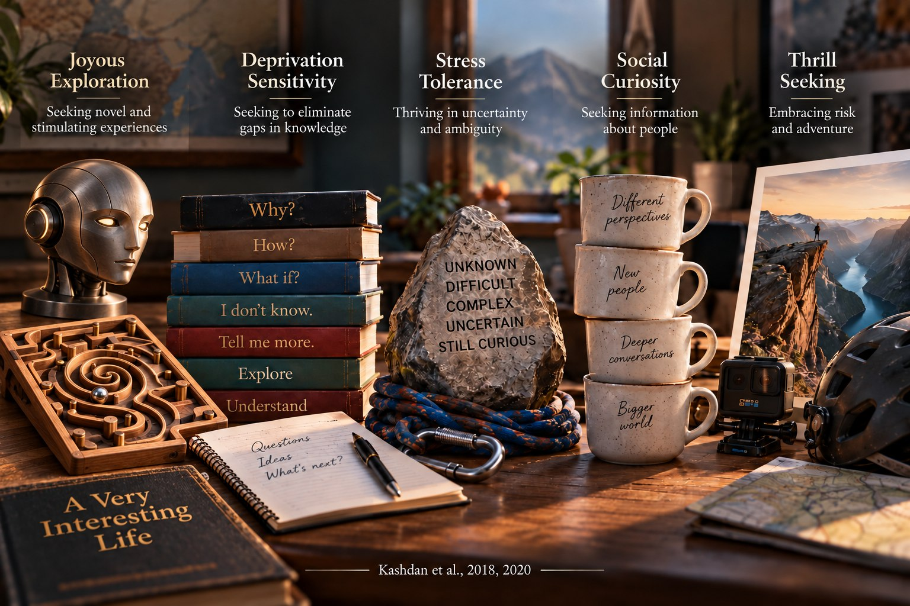

Science on how people can live better.
For more than 20 years the lab has asked questions that get too little attention and tested them with the best methods we can find. Every article is free on request.

Essential reading
Purpose & Meaning in Life
Curiosity & Creativity
- Curiosity at work: a productive inefficiency model (in press, PDF)
- Enhancing curiosity with a wise intervention to improve political conversations and relationships
- The Five-Dimensional Curiosity Scale Revised (5DCR)
- Curiosity has comprehensive benefits in the workplace
- Interesting things and curious people
Well-Being & Resilience
Psychological Flexibility
Psychological Strengths
Emotional Disturbances
Measures from the lab
Free for science and practice. Contact us about commercial use.
Five-Dimensional Curiosity Scale Revised (5DCR)
Kashdan, Disabato, Goodman, & McKnight (2020), Personality and Individual Differences.
Personalized Psychological Flexibility Index
Kashdan, Disabato, Goodman, Doorley, & McKnight (2020), Psychological Assessment.
Multidimensional Workplace Curiosity Scale
Kashdan, Goodman, Disabato, McKnight, Kelso, & Naughton (2020), Personality and Individual Differences.
Affective Style Questionnaire
Hofmann & Kashdan (2010), Journal of Psychopathology and Behavioral Assessment. Concealing, adjusting, and tolerating emotions.